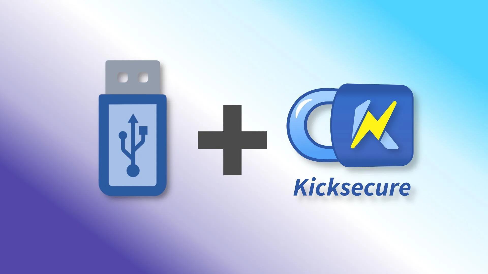
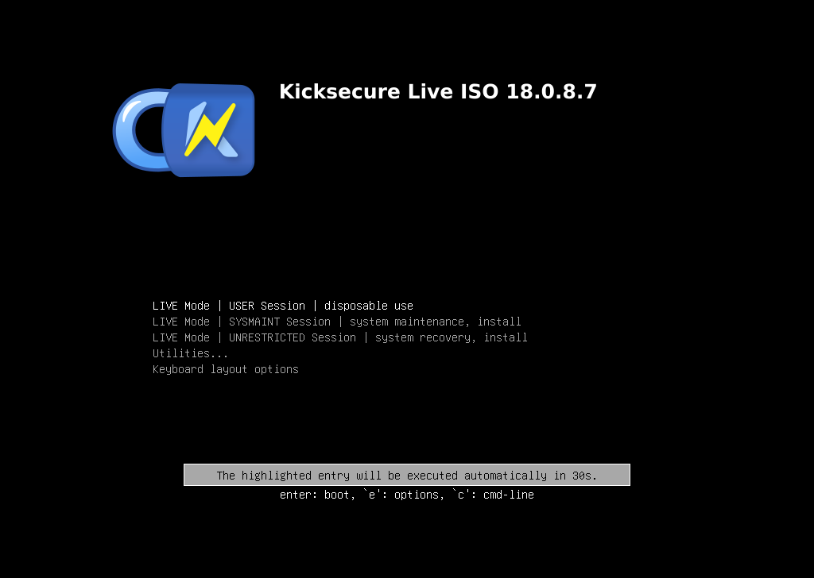
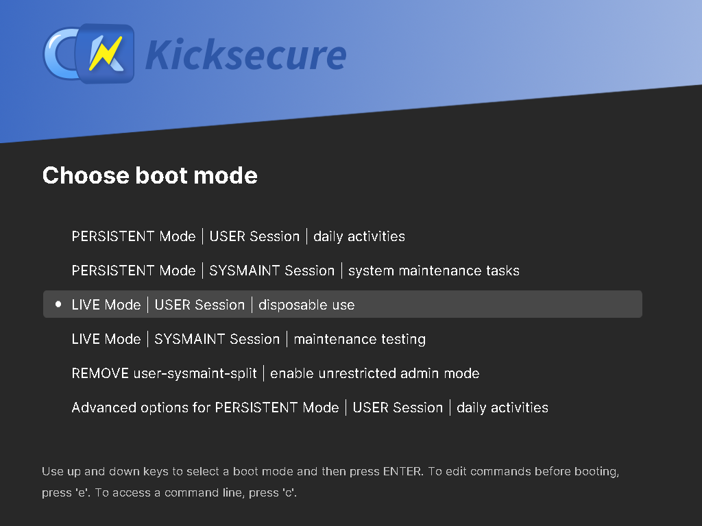

Installation of Kicksecure on a USB

Kicksecure can be used as a plug-and-play operating system on a USB data stick. It comes in two flavors: a non-persistent Live USB system, and a persistent operating system booted from USB.
Introduction
Kicksecure can be easily and comfortably booted and used from a USB data stick. No need to install it on your hard drive. Once Kicksecure has been flashed to a USB data stick, simply plug in the stick, boot Kicksecure, and you are ready to work with Kicksecure for tasks that require robust security. There are two options available.
- A non-persistent (live) USB operating system that forgets all user-created data after shutdown.
- A persistent USB operating system which saves your data on the USB drive itself.
Installation / Use
The following options are available for Kicksecure on USB.
1 Choice.
Choose an option below to view the matching instructions:
ISO LIVE Mode
To set up ISO Live Mode on a USB data stick, follow these instructions.
2 On the ISO page, read the Download, Create Live USB section.
3 Follow the instructions to flash the ISO to a USB stick.
4 Boot from the USB stick.
Figure: Kicksecure ISO Live Mode showing the GRUB bootloader

5 Done.
PERSISTENT Mode
To set up Kicksecure installed on a USB data stick (PERSISTENT Mode), follow these instructions.
2 Notes.
3 On the ISO page, read the Download, Create Live USB section.
4 Follow the instructions to flash it to a USB stick ("LIVE-USB").
5 Boot from the USB stick.
Figure: Kicksecure ISO Live Mode showing the GRUB bootloader
6 On the desktop, click "Install to Hard Drive" and select the second USB device ("PERSISTENT-USB") as the installation target.
7 Power off. (Shut down the live session.)
8 Remove the USB stick that contains the Kicksecure installer ISO ("LIVE-USB").
9 Keep the USB with the installed Kicksecure ("PERSISTENT-USB") connected.
10 Boot from the installed Kicksecure USB stick ("PERSISTENT-USB").
Figure: Persistent Mode Boot - User
Session

11 Done.
Advanced users: There is also a different option for advanced users. Click "Learn More" to open.
Advanced users can also create a Kicksecure USB stick by following these instructions:
- Take a USB data stick with at least 16 GB of space.
- Install Debian on the USB stick. Instructions are available on the Debian Wiki. Additional online guides explain how to install Debian on a USB.
- Morph the Debian installation into Kicksecure. Instructions for this can be found in our Kicksecure for Debian installation guide.
- Done.
OPT-IN LIVE Mode

2 Follow all the steps listed under #PERSISTENT_Mode.
3 During the boot process, in the GRUB boot menu, choose "Live Mode".
4 Done.
Advantages of Kicksecure on USB
Simple to Try Out: An easy way to try out Kicksecure without needing to install Kicksecure on your computer.
Way easier than Dual Boot: It is much easier to install an operating system on a separate USB drive than attempting to set up a dual boot on the same hard drive.
Better Security: A higher level of security can be achieved by installing the host operating system(s) on dedicated (encrypted) external disk(s), such as a USB flash drive or similar media. [1] Compared to dual booting, physical external media reduces the risk of malware running on other operating system(s) infecting the Kicksecure host operating system.
Can be unplugged and securely stored: When Kicksecure disk(s) are not in use, they can either be removed or hidden.
See also
Footnotes
- ↑ For example, eSATA or FireWire. FireWire should generally be avoided for security reasons: * https://louwrentius.com/firewire-the-forgotten-security-risk.html * https://en.wikipedia.org/wiki/IEEE_1394#Security_issues